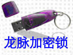
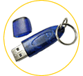
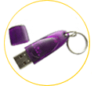
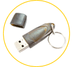

北京世纪龙脉科技有限公司
公司简介
龙脉科技是国内领先的专业从事软件保护和身份认证的高新技术企业。公司自成立以来，不断追寻国际先进技术，自主研发了DAM系列、NOX系列加密锁(又称加密狗)
、IA系列USB
Key身份认证锁等产品。保护软件开发商的利益不被侵害！
龙脉科技秉承了清华人"自强不息，厚德载物"的精神，凭借着雄厚的技术实力不断创新、诚信的工作态度、畅通的供货渠道、真诚服务于每一位客户。龙脉科技通过各种方式为客户传递信息安全产品和技术，为国内外软件开发商提供最具有安全性的产品。
公司优势
龙脉科技做为领先的安全产品和解决方案提供商，我们的竞争优势体现在对客户需求的深入了解，对行业规范及标准的准确理解，对技术发展的把握和迅速提供整合解决方案的能力，并具有经验丰富的管理团队，以及强大的市场开拓网络。
专一才能专业：
龙脉科技专业从事软件加密、身份认证，自主研发、生产、销售，提供相应的解决方案，从技术研发、产品生产、市场营销等各个方面，提供专业产品与服务，以高质量产品和快捷的应用服务所有合作伙伴和客户。企业以专业素养获得客户的信赖，为用户创造价值。
自主创新：
龙脉科技追求卓越的技术创新，以最新最好的技术服务我们的用户，使合作伙伴从我们独特的技术中受益。既具备不同应用平台的产品应用能力，又经常活跃在国内外技术标准研究推广的各个平台上面。以专家型技术队伍为所有用户和伙伴提供安全可靠的产品。
企业团队：龙脉科技是由清华博士生创办的，秉承了清华人的“自强不息，厚德载物”精神，
公司拥有一支朝气蓬勃、勇于奉献、团结进取、不断创新的优秀团队，一批年富力强学有专长的科技人员具有相当的专业经验和智慧。
自主知识产权的产品：
龙脉科技研制的产品具有从硬件到软件的完全自主知识产权，掌握产品从核心到应用的所有技术环节，完全控制产品从生产到服务的全部过程，具有多年在行业应用中的技术支持经验，拥有以客户需求为中心进行产品创新的能力。
以服务为起点：
龙脉科技以丰富的产品为契机，根据对用户需求的准确把握，为所有的用户和合作伙伴提供量身定做的应用解决方案。从第一次接触开始，使我们的服务能为用户和伙伴带来成功的动力。
世纪龙脉：
龙脉科技成立于 2000
年，我们将立足我们专注的核心事业，以我们的激情和专业精神，从技术和市场等各方面推广其应用，使自己成为产业链中最具价值的一环。
我们的使命：
振兴民族软件产业，为打击盗版而努力！
地址：北京市海淀区五道口华清商务会馆
707A
电话：010-82863506
82863507
传真：010-82863506转607
邮编：100083

典型产品一：NOX单机锁

产品介绍：
NOX 加密锁是北京世纪龙脉科技有限公司最新研发的一套先进的软件保护产品，通过它可以保护该软件不被非法复制和非授权访问和使用。 NOX 型加密锁为标准的 HID 设备，无需安装驱动，内置 128位密钥存储区和 8 字节内存区，掉电保持存储区支持写 10 万次，读取次数不限； NOX 的内存区可任意读写，用户可用于在软件运行过程中存储一些用于随机检测的数据，可以防止共享器共享。
软件接口：
系统支持： Windows 9x/NT/2000/XP/Server2003。
从传统的windows95到最新的 Windows2003，本公司的加密锁产品为绝大多数开发工具提供了相应的软件接口，如易语言、VB、 Delphi、VC、C++ Builder、．Net、Foxpro、Power Builder、 Auto CAD ADS、ARX等。产品提供了SDK开发包，包含了各种开发工具下的Demo程序、以及各种工具程序。
典型产品二：NOX2单机锁

产品介绍：
NOX2 加密锁是北京世纪龙脉公司基于 NOX 加密锁研发的一套先进的软件保护产品 ，通过它可以保护该软件不被非法复制和非授权访问和使用。 NOX 型加密锁为标准的 HID 设备，无需安装驱动，内置 4个64字节存储区和 8 字节内存区， 其中 4 个掉电保持存储区支持读写属性控制， 用户可灵活地控制每个分区的访问方式， 掉电保持存储区支持写 10 万次，读取次数不限； NOX 的内存区可任意读写，用户可用于在软件运行过程中存储一些用于随机检测的数据，可以防止共享器共享。
软件接口：
系统支持： Windows 9x/NT/2000/XP/Server2003。
从传统的windows95到 Windows2003，本公司的加密锁产品为绝大多数开发工具提供了相应的软件接口，如易语言、VB、 Delphi、VC、C++ Builder、．Net、Foxpro、Power Builder、 Auto CAD ADS、ARX等。产品提供了SDK开发包，包含了各种开发工具下的Demo程序、以及各种工具程序。
典型产品三：NOX时钟锁

产品介绍：
超强时钟锁在NOX基础上，增加了时钟模块，提供安全的时钟功能和次数限制功能。使用该款产品，软件开发商可以快速构建灵活的软件销售体系，例如软件试用、租赁、分期付款等模式。
功能特点：
可控制软件的使用时间，提供三种时钟模式设置，精确定位软件使用的起始、终止时间
可控制软件的使用次数
使用次数和时钟功能安全可靠，试图修改系统时间将导致软件无法正常使用
时间限制和次数限制均支持远程解除和修改，最终用户无需将锁寄回开发商处解除限制
软件接口：
系统支持： Windows 9x/NT/2000/XP/Server2003。
从传统的windows95到最新的 Windows2003，本公司的加密锁产品为绝大多数开发工具提供了相应的软件接口，如易语言、VB、 Delphi、VC、C++ Builder、．Net、Foxpro、Power Builder、 Auto CAD ADS、ARX等。产品提供了SDK开发包，包含了各种开发工具下的Demo程序、以及各种工具程序。
典型产品四：DAM2+单机锁
产品介绍：
DAM2+加密锁在原有DAM2基础上研发的一套更安全、更方便的先进软件保护产品， DAM2+ 型加密锁为标准的 HID 设备， 操作系统直接支持，因此无需安装硬件驱动，直接连接到计算机的 USB 端口即可在程序中使用，省去安装硬件驱动所带来的兼容性的风险。 DAM2+ 型加密锁 内置 2K 字节掉电保持存储区，掉电保持存储区支持写 10 万次，读取次数不限，因此用户应避免频繁进行写操作，可根据具体的使用环境来决定如何使用该存储区。另外，DAM2+提供了全球唯一硬件ID，替代硬盘序列号、网卡地址等唯一标识，方便用户软件注册。
软件接口：
系统支持： Windows 9x/NT/2000/XP/Server2003。
从传统的windows95到最新的 Windows2003，本公司的加密锁产品为绝大多数开发工具提供了相应的软件接口，如易语言、VB、 Delphi、VC、C++ Builder、．Net、Foxpro、Power Builder、 Auto CAD ADS、ARX等。产品提供了SDK开发包，包含了各种开发工具下的Demo程序、以及各种工具程序。
典型产品五：DAM2+网络锁
产品介绍：
DAM2+ 网络锁是北京世纪龙脉公司在原有 DAM2+ 基础上研发的一套网络保护产品，用于 C/S ( 客户端 / 服务器 ) 架构，将加密锁连接到服务器端即可限制使用您的软件的用户数，通过它可以保护该软件不被非法复制和非授权访问和使用。DAM2+ 型加密锁 内置 2K 字节掉电保持存储区，掉电保持存储区支持写 10 万次，读取次数不限，因此用户应避免频繁进行写操作，可根据具体的使用环境来决定如何使用该存储区。 同时支持最多 255 个客户端的并发连接用于限制同时使用软件的用户数。
软件接口：
系统支持： Windows 9x/NT/2000/XP/Server2003。
从传统的windows95到 Windows2003，本公司的加密锁产品为绝大多数开发工具提供了相应的软件接口，如易语言、VB、 Delphi、VC、C++ Builder、．Net、Foxpro、Power Builder、 Auto CAD ADS、ARX等。产品提供了SDK开发包，包含了各种开发工具下的Demo程序、以及各种工具程序。